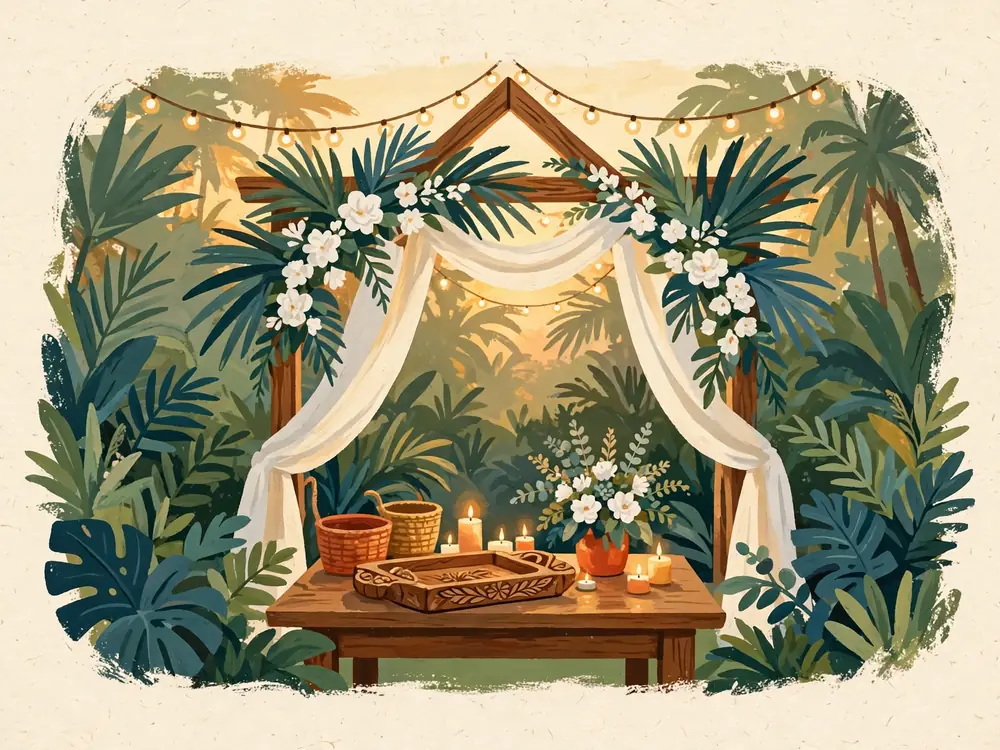
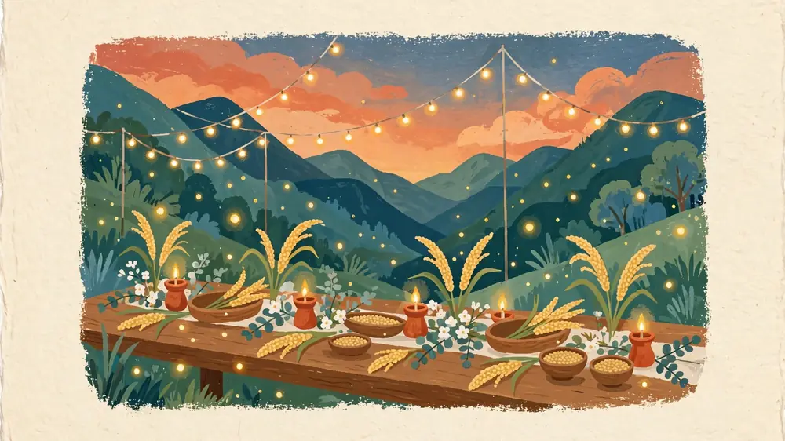
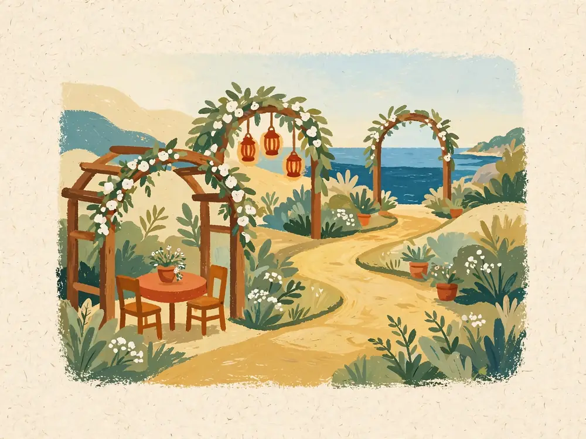
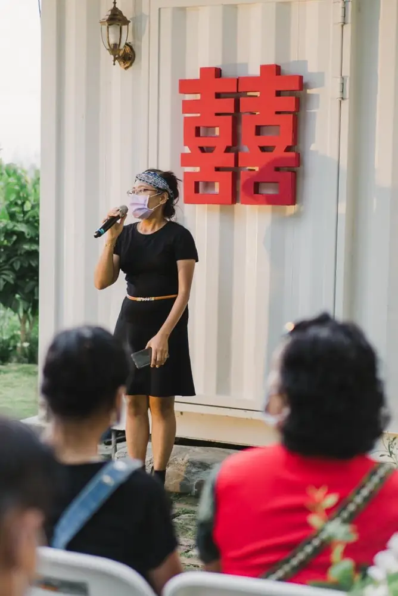
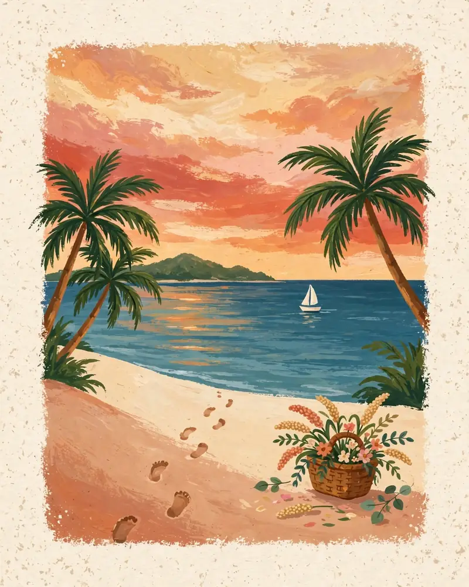
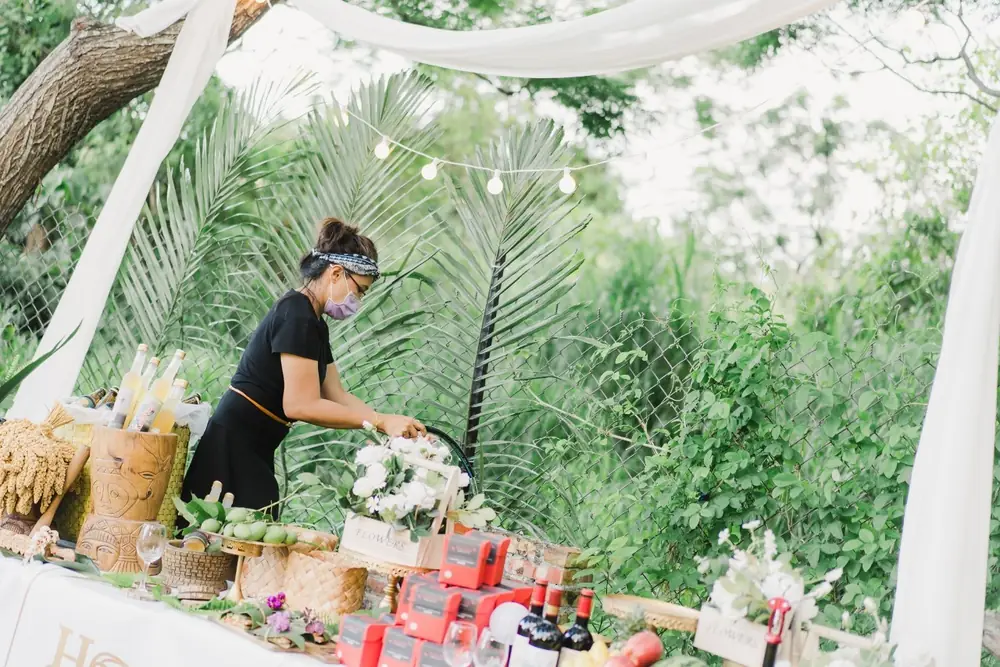
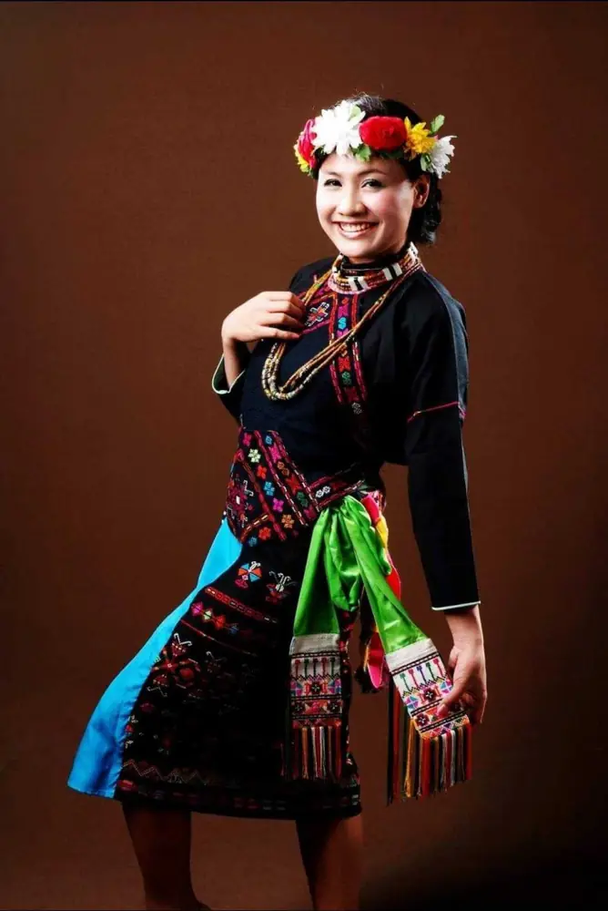
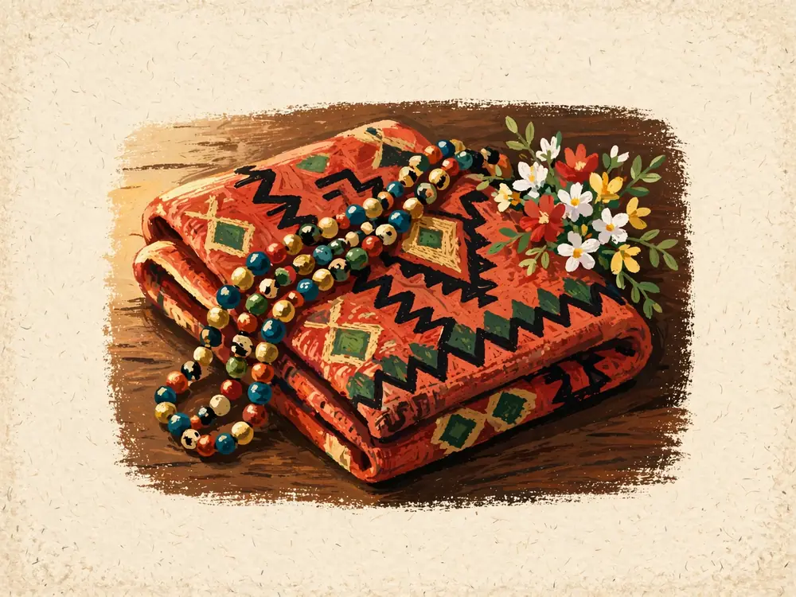
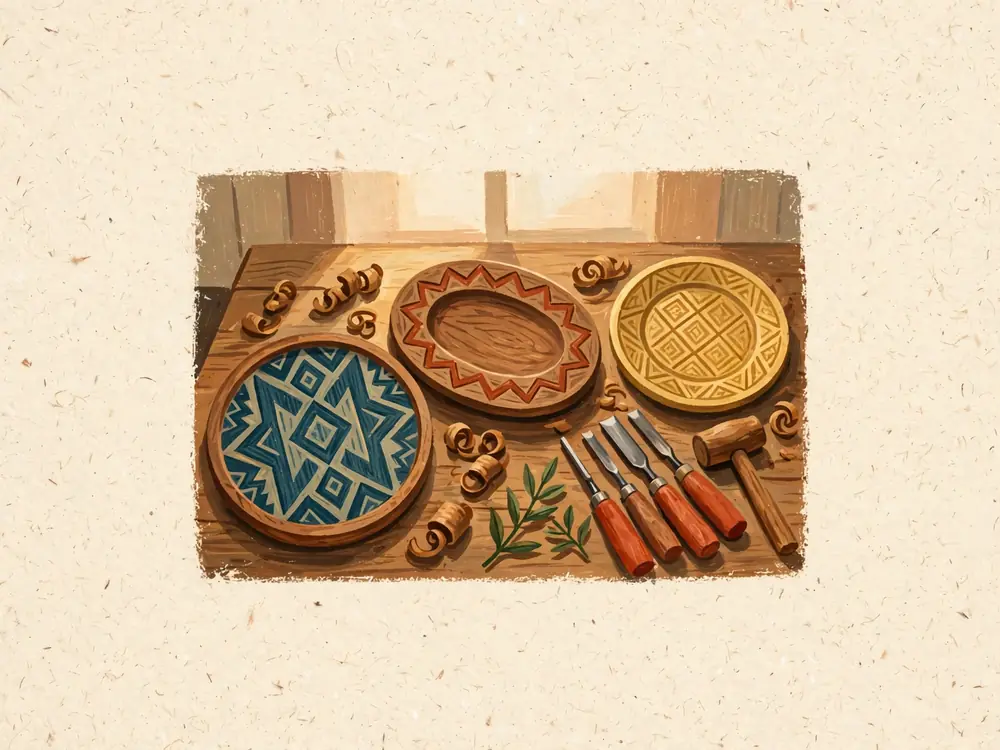
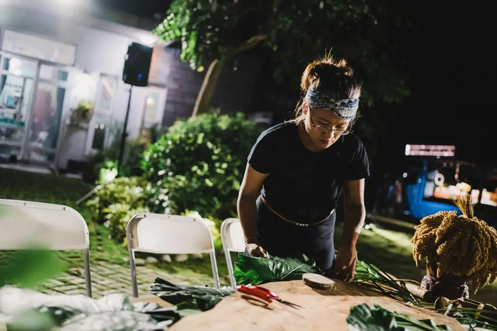

最強的一張牌
原民文化婚禮
瑪樂法特別打造排灣風格的婚禮派對，把傳統排灣文化融入現代婚禮儀式，創造西洋與排灣的文化碰撞。憑著對原住民族知識的掌握，她也能操辦包含排灣族、阿美族在內的原住民族風格婚禮，並把丈夫的木雕擺盤融入現場。
2021
年創立瑪樂法
10 月 6 日開幕感恩茶會
3
階段服務
前置討論・婚宴當日・蜜月規劃
5
年台北婚顧歷練
返鄉前在台北婚顧業服務
3
種語言
英文・日文・排灣族語
生活事蹟
她的路不是直線：部落、台北、飯店、景觀、婚禮——每一段都變成婚禮裡的養分。
童年 · 大鳥部落
小學以前，京穎在台東縣大武鄉大鳥部落長大。卑南族外公入贅到排灣族外婆家，她對以排灣族居多的大鳥部落，有比較強烈的認同感。小小年紀，她就跟著外公一起照顧中風的外婆，提早學會扛起事情。
少年 · 台北
國小畢業後，她跟著父母到台北。媽媽經營藝品店，客人很多是外國人，京穎在那裡展現過人的語言天分：英文、日文學得輕鬆，加上從小在部落使用的排灣族語，三種語言成了她做服務業的底氣。
年輕時 · 媒體
京穎曾有個明星夢，加入了公視培訓學員。她說，現在原民台許多資深員工，都是當時的同學。雖然最後沒有留在媒體業，這段經驗卻讓她學會面對人群、說好一個故事——後來她也當過原民線記者。
台北 · 飯店業
在喜來登大飯店工作期間，憑著服務熱忱與語言天賦，她被提拔至接待白金卡會員，後來更擔任企業創辦人的私人秘書。與高端人士互動的經驗，訓練出她「能與任何人互動」的個性，也讓她對服務品質的要求變得很高。
轉折 · 美國行
年輕時一場美國行，當地的庭園造景深深吸引了她。回到台灣，她從飯店業離職，投入景觀設計，一路邊做邊學，最終成為一位包辦人生大事的婚顧師。空間與美感，從此成了她的專業。
25 歲 · 宏願
25 歲那年，謝京穎在心中埋下宏願：要在未來的事業藍圖裡，以原民文化做為根基，開創新的婚顧模式。她去上了婚禮顧問師的課程，也開始想像：把全省的婚禮風格，連同蘭嶼的婚禮風格，一起帶進中西式的祝福儀式裡。
台北 · 婚禮業五年
她先在婚禮布置公司擔任門市人員，親眼見到如電影《大亨小傳》般奢華氣派的婚禮現場，大為驚奇，也發現自己對空間布置的熱愛。在台北婚顧業待了 5 年，她統籌策劃過大大小小的百萬級婚宴，主持、歌手、布置一身兼。
2019 · 代表案例
歌手安歆澐 2019 年甜蜜出嫁龍舟國手莊英杰，百萬婚宴現場從花藝設計到擺件陳設，都充滿濃濃的原民風味——背後的操刀手，正是謝京穎。（原視新聞報導）
採訪 · 土坂部落
擔任原民線記者時，她到土坂部落採訪木雕大師朱財寶，深深為他的作品著迷。離開前，高跟鞋意外毀損，正煩惱時，大師的兒子張威光默默拿了鞋子走來——從此結下緣分，兩人成了夫妻，也成了事業上最好的拍檔。（微笑台灣專訪）
返鄉 · 照顧母親
回到台東的機緣，是照料罹患肺腺癌的母親。照護的經驗讓她想起童年與外公照顧外婆的日子，也讓她成長很多。之後，她與丈夫一起在台東定居，決定在這裡開展婚顧事業。
2021 · 創立瑪樂法
2021 年 8 月 3 日，瑪樂法婚禮顧問整合行銷有限公司設立；同年 10 月 6 日舉行開幕感恩茶會。在原民會百萬精實創業計畫的挹注下，這是台東第一間婚禮顧問公司，串聯周邊原鄉產業，提供一站式婚禮服務。疫情之下，她還透過手機直播宣傳開業，和其他創業夥伴彼此借力。
「排灣族是非常重視婚禮儀式傳統的，每個儀式都有它特殊的意義。」
—— 謝京穎，微笑台灣專訪（2021 年）。她說，如何深入了解各族的儀式、量身打造有原民特色與內涵的婚禮，是她現在努力的目標。
專長
中式、西式、原住民族風格——重點不是形式，而是每一道儀式背後的意義，都被好好對待。

最強的一張牌
瑪樂法特別打造排灣風格的婚禮派對，把傳統排灣文化融入現代婚禮儀式，創造西洋與排灣的文化碰撞。憑著對原住民族知識的掌握，她也能操辦包含排灣族、阿美族在內的原住民族風格婚禮，並把丈夫的木雕擺盤融入現場。

場地布置、道具安排、影片播放等細節，都交給團隊操持，新人只要從容享受婚禮。

前置討論、婚宴當日、蜜月規劃，與新人及相關資源共同設計出大家都滿意的方案。

婚禮主持、歌手、布置一身兼，現場的氣氛與流程，一個人就顧得周全。

她自述在婚顧界首創「售後服務」：婚禮之後的蜜月旅行與家族遊，也幫新人一起規劃。

桌上的木雕器皿與擺飾，是原民文化婚禮裡最搶眼的細節。京穎把丈夫的木雕作品化作婚禮擺盤，讓文化不只是裝飾，而是整場婚禮的靈魂。
照片：京穎布置戶外婚禮現場（看見太陽計畫）。點照片上的數字，看每個亮點的說明。
京穎把台東跟婚禮有關的產業都鏈接起來：新人有需要，資源馬上用得上，省去許多不必要的時間成本。她與在地廠商結成策略聯盟、共享成果，終極目標是帶動地方經濟。
經歷與肯定
從飯店、媒體到婚禮現場，她把服務、美感與文化的功課，全部做在婚禮之前。



另一半的手藝
丈夫張威光是排灣木雕大師朱財寶之子，在土坂部落經營撒巴里文化藝術工作室（工作室之名承接父親之名）。他從大型木刻轉向貼近生活的層架與器皿，京穎則把他的木雕擺盤融入婚禮——兩個人的事業，成了一場婚禮裡最動人的搭配。
媒體牆
以下三則皆為公開報導與官方專文，點開可看原文。
照片牆
點照片可放大，左右鍵可切換。照片皆為公開報導附圖，確認為本人。
